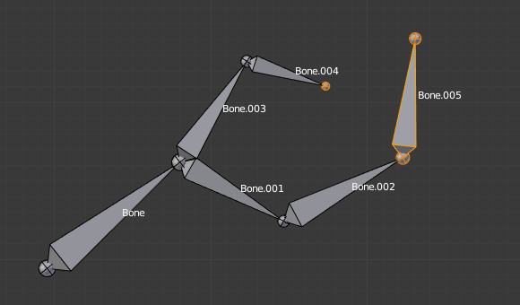

Приріднення -- Parenting¶
Орієнтир -- Reference
| Mode: | Edit Mode |
|---|---|
| Panel: | |
| Menu: | |
| Hotkey: | Ctrl-P, Alt-P |
Ви можете редагувати відношення між кістками (і звідси створювати/модифікувати ланцюги кісток) як у 3D Огляді -- 3D View, так і Редакторі Властивостей -- Properties Editor. Незалежно від методу, якому ви надаєте перевагу, завжди слід для кожної кістки вирішувати питання, чи вона має бути приріднена до іншої і якщо так, то чи повинна вона бути ще й з'єднана з нею.
Для приріднення та/або з'єднання кісток ви можете:
In a 3D View, select the bone and then its future parent, and press Ctrl-P (or ). In the small Make Parent menu that pops up, choose Connected if you want the child to be connected to its parent, else click on Keep Offset. If you have selected more than two bones, they will all be parented to the last selected one. If you only select one already-parented bone, or all selected bones are already parented to the last selected one, your only choice is to connect them, if not already done. If you select only one non-parented bone, you will get the Need selected bone(s) error message...
Ghi chú
При даному методі кістки, що стали нащадками не будуть ні масштабовані, ні обернуті -- вони тільки будуть пересунуті, якщо ви вибрали з'єднати їх з верхівкою предка.
In the Properties editor, Bones tab, for each selected bone, you can select its parent in the Parent data ID to the upper right corner of its Relations panel. If you want them to be connected, just enable the checkbox to the right of the list.
Ghi chú
При цьому методі верхівка нащадкової кістки ніколи не буде пересунута -- а тому, якщо увімкнено стяг Connected, то ця нащадкова кістка буде повністю трансформована цією операцією.

Стартова арматура з Bone.005 прирідненою та з'єднаною до Bone.004. |

Bone.005 re-parented to Bone.002, but not connected to it (same result, using either Ctrl-P 2 in 3D View, or the Bones tab settings). |

Bone.005 приріднена та з'єднана з Bone.002.
Using the Parent data ID of Bone.005 Relations panel.
|
{kind=link}
{kind=link}
Для роз'єднання та/або звільнення (відріднення та роз'єднання) ви можете:
- У 3D Огляді -- 3D View виділіть бажані кістки та натисніть Alt-P (або виберіть «Арматура > Приріднення > Зчистити Приріднення» -- ). У спливному меню «Зчистити Приріднення» -- Clear Parent виберіть Clear Parent для повного звільнення (від приріднення і з'єднання) усіх виділених кісток, або «Роз'єднати Кістки» -- Disconnect Bone, якщо ви хочете тільки роз'єднати з'єднання (залишивши приріднення).
- In the Properties editor, Bones tab, for each selected bone, you can select no parent in the Parent data ID of its Relations panel, to free it completely. If you just want to disconnect it from its parent, disable the Connected checkbox.
Зауважте, що відношення з не-виділеними нащадками ніколи не модифікується.